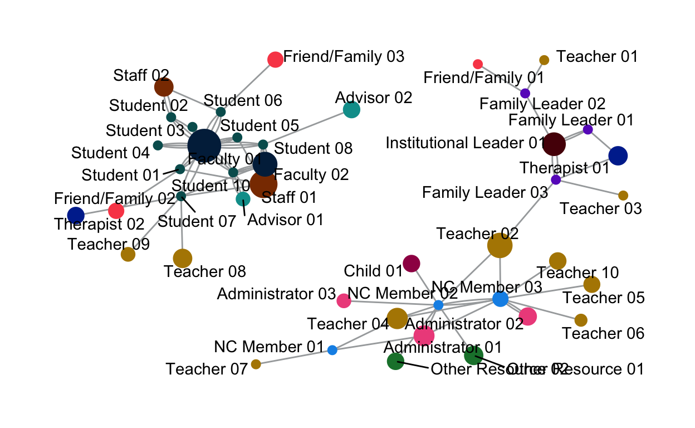
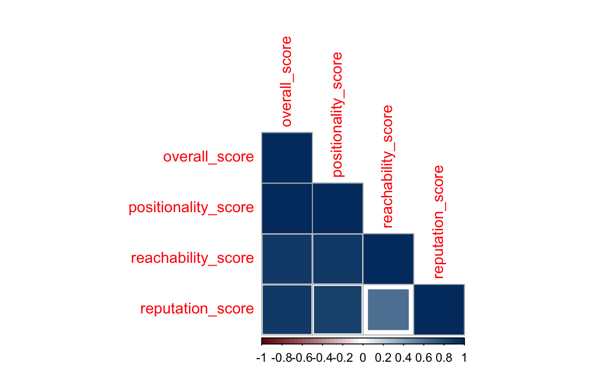
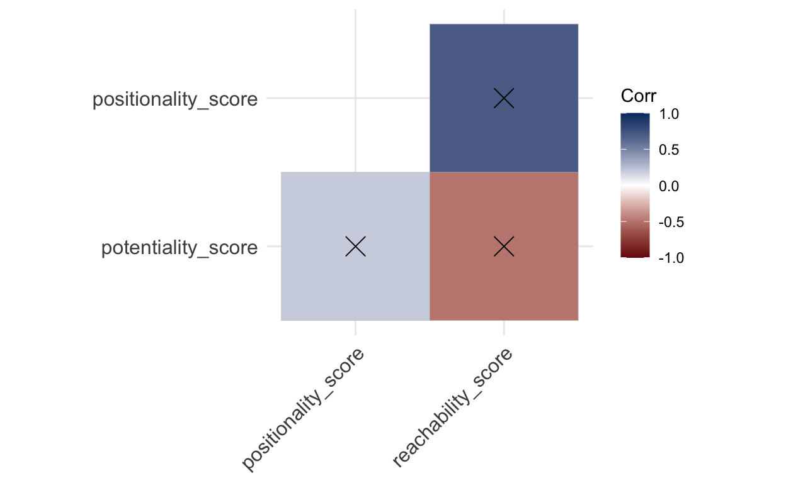

Understanding small and unruly networks in efforts to promote educational justice.
Distill is a publication format for scientific and technical writing, native to the web.
Learn more about using Distill for R Markdown at https://rstudio.github.io/distill.
This is an R Markdown Notebook. When you execute code within the notebook, the results appear beneath the code.
Try executing this chunk by clicking the Run button within the chunk or by placing your cursor inside it and pressing Cmd+Shift+Enter.
Don Knuth, reproducibility, but in this case trustworthiness and transparency are more important.
I’m a bricoleur.
Libraries are packages that are loaded in to extend the functionality to the base R programming language. This project makes use of three different categories of libraries: Network Graph Libraries, a Quantitative Anthropology Library, and Other R Libraries.
Network Graph Libraries allow for the construction, analysis, and visualization of social network data. The igraph library (Csardi and Nepusz 2006) is the main social network analysis engine, while tidygraph (Pedersen 2023) and ggraph (Pedersen 2022) provide functionality for processing and visualizing social network graphs, respectively. Centiserve (Jalili 2017) and CINNA (Ashtiani, Mirzaie, and Jafari 2019) provide extended centrality algorithms.
Since participants are asked for names and roles, the data collection process is essentially a freelisting protocol (Quinlan 2018). Under that assumption, Smith’s Salience (S) Score can be calculated. AnthroTools (Purzycki and Jamieson-Lane 2017) provides functionality for working with freelist data and calculating Smith’s S.
library(AnthroTools)The other libraries utilized for this analysis . readr (Wickham, Hester, and Bryan 2023). rio (Chan et al. 2021). Glue (Hester and Bryan 2022), tidyr (Wickham, Vaughan, and Girlich 2023), and dplyr (Wickham et al. 2023).
Use the IBM Carbon Design System color pallete.
the.palette <<- c("FL" = "#6929c4", "NC" = "#1192e8", "PA" = "#005d5d",
"CF" = "#9f1853", "FF" = "#fa4d56", "IL" = "#570408",
"OR" = "#198038", "OT" = "#002d9c", "SA" = "#ee538b",
"ST" = "#b28600", "UA" = "#009d9a", "UF" = "#012749",
"US" = "#8a3800")
the.abbrev <<- data.frame(color_code = c("FL", "NC", "FF", "IL", "OR", "OT", "SA",
"ST", "UA", "UF", "US", "PA", "CF"),
full = c("Family Leader", "NC Member", "Friend/Family",
"Institutional Leader", "Other Resource", "Therapist",
"Administrator", "Teacher", "Advisor", "Faculty",
"Staff", "Student", "Child"))set.graph <- function(the.frame, the.salience) {
the.frame <- the.frame |>
select("from", "to")
the.weight <- the.frame %>%
group_by(from, to) %>%
summarize(weight = n()) %>%
ungroup()
the.frame <- merge(the.frame, the.weight, by = c('from', 'to'))
the.graph <- the.frame |>
graph_from_data_frame(directed = TRUE)
return(the.graph)
}draw.graph <- function(the.graph, the.salience, the.file) {
the.filename <- glue("output/sna_{the.file}-plot.pdf")
the.salience <- the.salience %>%
select(CODE, SmithsS) %>%
rename("name" = "CODE")
node.data <- data.frame(name = V(the.graph)$name) %>%
mutate(id_no = substr(V(the.graph)$name, 3, 4)) %>%
mutate(color_code = substr(V(the.graph)$name, 1, 2)) %>%
left_join(the.salience) %>%
left_join(the.abbrev) %>%
mutate(label = glue("{full} {id_no}")) %>%
replace_na(list(SmithsS = 0.01))
V(the.graph)$color_code <- node.data$color_code
V(the.graph)$size_code <- (node.data$SmithsS) * 100
V(the.graph)$label <- node.data$label
set.seed(123)
the.plot <- the.graph |>
ggraph(layout = "fr") +
geom_edge_fan(color = "#A7A9AB") +
geom_node_point(aes(color = color_code,
size = size_code),
show.legend = FALSE) +
scale_size_continuous(range = c(2.5,10)) +
scale_color_manual(values = the.palette) +
geom_node_text(aes(label = label), repel = TRUE) +
labs(edge_width = "Letters") +
theme_graph(base_family = "Input Mono")
ggsave(the.plot, filename = the.filename, width = 11.5, height = 8, units = "in", dpi = 300)
return(the.plot)
}calculate.centrality <- function(the.graph, the.salience, the.file) {
the.salience <- the.salience |>
select("actor" = "CODE", "SmithsS")
analysis.network.data <- data.frame(indegree = igraph::degree(the.graph, mode = "in"),
outdegree = igraph::degree(the.graph, mode = "out"),
betweenness = igraph::betweenness(the.graph, directed = FALSE),
leaderrank = leaderrank(the.graph),
laplace = laplacian(the.graph, mode = "in"),
leverage = leverage(the.graph),
latora = closeness.latora(the.graph))
analysis.network.data$actor <- rownames(analysis.network.data)
rownames(analysis.network.data) <- NULL
analysis.network.data <- analysis.network.data |>
select(actor, everything()) |>
left_join(the.salience) |>
replace_na(list(SmithsS = 0))
rownames(analysis.network.data) <- analysis.network.data$actor
return(analysis.network.data)
}calculate.salience <- function(the.frame, the.grouping, the.file) {
the.filename <- glue("output/salience_{the.file}.csv")
anthro.frame <- the.frame |>
select("Subj" = "from", "Order" = "order", "CODE" = "to", "GROUPING" = "question") |>
add_count(Subj, GROUPING) |>
filter(n > 1)
if(the.grouping == "none") {
anthro.frame <- anthro.frame |>
select("Subj", "Order", "CODE") |>
distinct() |>
as.data.frame()
anthro.frame$Order <- as.numeric(anthro.frame$Order)
the.salience <- CalculateSalience(anthro.frame)
} else {
anthro.frame <- anthro.frame |>
select("Subj", "Order", "CODE", "GROUPING") |>
distinct() |>
as.data.frame()
anthro.frame$Order <- as.numeric(anthro.frame$Order)
the.salience <- CalculateSalience(anthro.frame, GROUPING = "GROUPING")
}
code.salience <- SalienceByCode(the.salience, dealWithDoubles = "MAX")
write_csv(code.salience, the.filename, append = FALSE)
return(code.salience)
}calculate.keyactors <- function(the.frame, the.salience, the.file) {
the.salience <- the.salience %>%
select("CODE", "SmithsS") %>%
rename("actor" = "CODE")
the.filename <- glue("output/keyactors_{the.file}.pdf")
table.filename <- glue("output/table_{the.file}_keyactors.csv")
max_leverage <- max(the.frame$leverage, na.rm = TRUE)
min_leverage <- min(the.frame$leverage, na.rm = TRUE)
key.frame <- the.frame %>%
select(actor, leverage, leaderrank)
key.res <- lm(leaderrank ~ leverage, data = key.frame)$residuals
key.frame <- transform(key.frame, residuals = abs(key.res))
node.data <- data.frame(actor = key.frame$actor) %>%
mutate(color_code = substr(key.frame$actor, 1, 2))
key.frame <- key.frame %>%
left_join(node.data, by = "actor") %>%
mutate(id_no = substr(key.frame$actor, 3, 4)) %>%
left_join(the.abbrev) %>%
mutate(label = glue("{full} {id_no}")) %>%
left_join(the.salience) %>%
replace_na(list(SmithsS = 0))
# Calculate Tukey's fences
q <- quantile(key.frame$leaderrank, c(0.25, 0.75))
iqr <- q[2] - q[1]
lower.fence <- q[1] - 1.5 * iqr
upper.fence <- q[2] + 1.5 * iqr
# Trim data
key.frame.leaderrank.trimmed <- key.frame$leaderrank[key.frame$leaderrank >= lower.fence &
key.frame$leaderrank <= upper.fence]
# Calculate Tukey's fences
q <- quantile(key.frame$leverage, c(0.25, 0.75))
iqr <- q[2] - q[1]
lower.fence <- q[1] - 1.5 * iqr
upper.fence <- q[2] + 1.5 * iqr
# Trim data
key.frame.leverage.trimmed <- key.frame$leverage[key.frame$leverage >= lower.fence &
key.frame$leverage <= upper.fence]
key.ymedian <- median(key.frame$leaderrank)
key.xmedian <- median(key.frame$leverage)
key.ymean <- mean(key.frame.leaderrank.trimmed)
key.xmean <- mean(key.frame.leverage.trimmed)
key.frame <- key.frame %>%
mutate(keystatus = case_when((leaderrank > key.ymean & leverage > key.xmean) ~ "Sage",
(leaderrank > key.ymean & leverage < key.xmean) ~ "Steward",
(leaderrank < key.ymean & leverage > key.xmean) ~ "Weaver")) %>%
na.omit() %>%
group_by(keystatus) %>%
arrange(desc(residuals), desc(SmithsS)) %>%
unique() %>% ungroup() %>% na.omit()
key.xmin <- min(key.frame$leverage)
key.xmax <- max(key.frame$leverage)
key.ymin <- min(key.frame$leaderrank)
key.ymax <- max(key.frame$leaderrank)
key.xmid <- (key.xmin + key.xmax)/2
key.ymid <- (key.ymin + key.ymax)/2
plot.ymin <- key.ymean - key.ymax
plot.xmin <- key.xmean - key.xmax
steward.count <- key.frame %>%
count(keystatus) %>%
filter(keystatus == "Steward") %>%
pull(n)
steward.count <- ifelse(is.numeric(steward.count), steward.count, 0)
steward.count <- steward.count %>% replace_na(0)
weaver.count <- key.frame %>%
count(keystatus) %>%
filter(keystatus == "Weaver") %>%
pull(n)
weaver.count <- ifelse(is.numeric(weaver.count), weaver.count, 0)
weaver.count <- weaver.count %>% replace_na(0)
key.plot <- ggscatter(key.frame, x = "leverage", y = "leaderrank",
label = "label", label.rectangle = FALSE, repel = TRUE,
theme = theme_minimal(), ylab = "Leader Rank Centrality", xlab = "leverage Centrality",
point = TRUE, show.legend = FALSE, color = "color_code", palette = the.palette,
conf.int = FALSE, cor.coef = FALSE, legend = "none")
if(steward.count != 0) {
key.plot <- key.plot +
geom_vline(xintercept = key.xmean, color = "#243142", alpha = 0.2) +
geom_label(aes(x = key.xmin, y = key.ymax, label = "Stewards", hjust = 0),
color = "#243142", fill = "#EEEEEE")
}
if(weaver.count != 0) {
key.plot <- key.plot +
geom_hline(yintercept = key.ymean, color = "#243142", alpha = 0.2) +
geom_label(aes(x = key.xmax, y = key.ymin,
label = "Weavers", hjust = 1), color = "#243142", fill = "#EEEEEE")
}
key.plot <- key.plot +
geom_label(aes(x = key.xmax, y = key.ymax,
label = "Sages", hjust = 1), color = "#243142", fill = "#EEEEEE")# +
key.frame <- key.frame %>%
select(actor, leverage, leaderrank, residuals, SmithsS, keystatus) %>%
arrange(keystatus, desc(residuals), desc(SmithsS))
ggsave(key.plot, filename = the.filename, width = 11.5, height = 8, units = "in", dpi = 300)
#write_csv(key.frame, table.filename, append = FALSE)
return(key.frame)
}create.q.cent <- function(the.1, the.2, the.question) {
the.q.cent <- bind_rows(the.1, the.2) |>
mutate(question = the.question) |>
select(question, actor, betweenness, outdegree, indegree, leverage,
laplace, leaderrank, latora, SmithsS)
}
calculate.ranks <- function(the.cent) {
the.cent <- the.cent |>
mutate(outdegree_rank = dense_rank(desc(outdegree))) |>
mutate(betweenness_rank = dense_rank(desc(betweenness))) |>
mutate(indegree_rank = dense_rank(desc(indegree))) |>
mutate(leverage_rank = dense_rank(desc(leverage))) |>
mutate(laplacian_rank = dense_rank(desc(laplace))) |>
mutate(leaderrank_rank = dense_rank(desc(leaderrank))) |>
mutate(smiths_rank = dense_rank(desc(SmithsS))) |>
mutate(latora_rank = dense_rank(desc(latora))) |>
select(question, actor, outdegree, outdegree_rank, indegree, indegree_rank,
betweenness, betweenness_rank,
leverage, leverage_rank, laplace, laplacian_rank,
latora, latora_rank, leaderrank, leaderrank_rank, SmithsS, smiths_rank) |>
arrange(question, actor)
rownames(the.cent) <- NULL
return(the.cent)
}calculate.node.flexibility <- function(the.actor) {
set1 <- flex.frame |>
filter(actor == the.actor & question == "Q1") |>
select(actor, to) |>
as.data.frame()
set1$actor <- as.factor(set1$actor)
set1$to <- as.factor(set1$to)
set2 <- flex.frame |>
filter(actor == the.actor & question == "Q3") |>
select(actor, to) |>
as.data.frame()
set2$actor <- as.factor(set2$actor)
set2$to <- as.factor(set2$to)
set3 <- flex.frame |>
filter(actor == the.actor & question == "Q4") |>
select(actor, to) |>
as.data.frame()
set3$actor <- as.factor(set3$actor)
set3$to <- as.factor(set3$to)
jaccard.1 <- calculate.jaccard(set1, set2)
jaccard.2 <- calculate.jaccard(set2, set3)
jaccard.3 <- calculate.jaccard(set1, set3)
the.flexibility <- 1 - ((1/(3*(3-1)) * (jaccard.1 + jaccard.2 + jaccard.3)) / 3)
response.frame <- data.frame(actor = the.actor, flexibility = the.flexibility)
return(response.frame)
}key.overall <- function(the.frame) {
access_mean <- mean(the.frame$access_score)
reputation_mean <- mean(the.frame$reputation_score)
ggscatter(the.frame, x = "access_score", y = "reputation_score", label = "actor") +
geom_hline(yintercept = access_mean, color = "#243142", alpha = 0.2) +
geom_vline(xintercept = reputation_mean, color = "#243142", alpha = 0.2)
}When you save the notebook, an HTML file containing the code and output will be saved alongside it (click the Preview button or press Cmd+Shift+K to preview the HTML file).
The preview shows you a rendered HTML copy of the contents of the editor. Consequently, unlike Knit, Preview does not run any R code chunks. Instead, the output of the chunk when it was last run in the editor is displayed.
pates.frame <- import("https://osf.io/download/62qpa/", format = "csv") |>
mutate_all(toupper) |>
filter(id != "PA09") |>
pivot_longer(cols = starts_with("Q"),
names_to = "question",
values_to = "to") |>
drop_na() |>
select("question", "from" = "id", "to") |>
separate(col = question, into = c("question", "order"), sep = "_") |>
filter(to != "")
ncfl.frame <- import("https://osf.io/download/ghz3c/", format = "csv") |>
mutate_all(toupper) |>
pivot_longer(cols = starts_with("Q"),
names_to = "question",
values_to = "to") |>
drop_na() |>
select("question", "from" = "ID", "to") |>
separate(col = question, into = c("question", "order"), sep = "_") |>
filter(to != "")
full.frame <- rbind(pates.frame, ncfl.frame)full.salience <- calculate.salience(full.frame, "GROUPING", "full")
full.graph <- set.graph(full.frame, full.salience)
full.plot <- draw.graph(full.graph, full.salience, "full")
pates.q1.frame <- pates.frame |>
filter(question == "Q1")
pates.q1.salience <- calculate.salience(pates.q1.frame, "GROUPING", "Q1")
pates.q1.graph <- set.graph(pates.q1.frame, pates.q1.salience)
pates.q1.plot <- draw.graph(pates.q1.graph, pates.q1.salience, "q1_pates")
pates.q1.cent <- calculate.centrality(pates.q1.graph, pates.q1.salience, "q1_pates")
pates.q1.key <- calculate.keyactors(pates.q1.cent, pates.q1.salience, "q1_pates")
ncfl.q1.frame <- ncfl.frame |>
filter(question == "Q1")
ncfl.q1.salience <- calculate.salience(ncfl.q1.frame, "GROUPING", "Q1")
ncfl.q1.graph <- set.graph(ncfl.q1.frame, ncfl.q1.salience)
ncfl.q1.plot <- draw.graph(ncfl.q1.graph, ncfl.q1.salience, "q1_ncfl")
ncfl.q1.cent <- calculate.centrality(ncfl.q1.graph, ncfl.q1.salience, "q1_ncfl")
ncfl.q1.key <- calculate.keyactors(ncfl.q1.cent, ncfl.q1.salience, "q1_ncfl")pates.q3.frame <- pates.frame |>
filter(question == "Q3")
pates.q3.salience <- calculate.salience(pates.q3.frame, "GROUPING", "Q3")
pates.q3.graph <- set.graph(pates.q3.frame, pates.q3.salience)
pates.q3.plot <- draw.graph(pates.q3.graph, pates.q3.salience, "q3_pates")
pates.q3.cent <- calculate.centrality(pates.q3.graph, pates.q3.salience, "q3_pates")
pates.q3.key <- calculate.keyactors(pates.q3.cent, pates.q3.salience, "q3_pates")
ncfl.q3.frame <- ncfl.frame |>
filter(question == "Q3")
ncfl.q3.salience <- calculate.salience(ncfl.q3.frame, "GROUPING", "Q3")
ncfl.q3.graph <- set.graph(ncfl.q3.frame, ncfl.q3.salience)
ncfl.q3.plot <- draw.graph(ncfl.q3.graph, ncfl.q3.salience, "q3_ncfl")
ncfl.q3.cent <- calculate.centrality(ncfl.q3.graph, ncfl.q3.salience, "q3_ncfl")
ncfl.q3.key <- calculate.keyactors(ncfl.q3.cent, ncfl.q3.salience, "q3_ncfl")pates.q4.frame <- pates.frame |>
filter(question == "Q4")
pates.q4.salience <- calculate.salience(pates.q4.frame, "GROUPING", "Q4")
pates.q4.graph <- set.graph(pates.q4.frame, pates.q4.salience)
pates.q4.plot <- draw.graph(pates.q4.graph, pates.q4.salience, "q4_pates")
pates.q4.cent <- calculate.centrality(pates.q4.graph, pates.q4.salience, "q4_pates")
pates.q4.key <- calculate.keyactors(pates.q4.cent, pates.q4.salience, "q4_pates")
ncfl.q4.frame <- ncfl.frame |>
filter(question == "Q4")
ncfl.q4.salience <- calculate.salience(ncfl.q4.frame, "GROUPING", "Q4")
ncfl.q4.graph <- set.graph(ncfl.q4.frame, ncfl.q4.salience)
ncfl.q4.plot <- draw.graph(ncfl.q4.graph, ncfl.q4.salience, "q4_ncfl")
ncfl.q4.cent <- calculate.centrality(ncfl.q4.graph, ncfl.q4.salience, "q4_ncfl")
ncfl.q4.key <- calculate.keyactors(ncfl.q4.cent, ncfl.q4.salience, "q4_ncfl")\(F_i = \frac{\frac{1}{m(m-1)} \sum_{p\neq q} J(set_p^i, set_q^i)}{\max_{p,q} J(set_p, set_q)}\)
Where \(i\) represents a given actor, \(m\) is the total number of sets, \(p\) and \(q\) are indices representing the set of sets, and \(J\) represents the Jaccard Coefficient.
# Calculating Actor Flexibility Score
# Latex: F_i = \frac{\frac{1}{m(m-1)} \sum_{p\neq q} J(set_p^i, set_q^i)}{\max_{p,q} J(set_p, set_q)}
# Where:
# * i represents a given actor
# * m is the total number of sets
# * p and q are indices representing the set of sets
# * J represents the Jaccard Coefficient
flex.frame <<- full.frame |>
select(question, actor = from, to)
flex.results <- lapply(unique(flex.frame$actor), calculate.node.flexibility)
flex.score <- do.call(rbind, flex.results)q1.key <- create.q.key(pates.q1.key, ncfl.q1.key, "q1")
q3.key <- create.q.key(pates.q3.key, ncfl.q3.key, "q3")
q4.key <- create.q.key(pates.q4.key, ncfl.q4.key, "q4")
q.key <<- bind_rows(q1.key, q3.key, q4.key) |>
select(actor, keystatus) |>
mutate(keyscore = case_when(keystatus == "Sage" ~ 3,
keystatus == "Steward" ~ 2,
keystatus == "Weaver" ~ 1)) |>
group_by(actor) |>
summarize(keyscore = sum(keyscore)) |>
mutate(keyscore = keyscore / 9)Because this is a multilayered graph that includes information across a range of contexts in response to different prompts, the calculated centralities themselves cannot be compared because this is like comparing a golden delicious to a honey crisp apple. Instead, relative ranks can be compared across the multiple layers of the graphs: how did actor \(i\) rank compare to the others? This ranking provides a picture across contexts and prompts.
Blah blah blah.
q1.cent <- create.q.cent(pates.q1.cent, ncfl.q1.cent, "q1") |>
calculate.ranks()
q3.cent <- create.q.cent(pates.q3.cent, ncfl.q3.cent, "q3") |>
calculate.ranks()
q4.cent <- create.q.cent(pates.q4.cent, ncfl.q4.cent, "q4") |>
calculate.ranks()
q.cent <<- bind_rows(q1.cent, q3.cent, q4.cent)full.avg.cent <- q.cent |>
select(actor, betweenness_rank, laplacian_rank, outdegree_rank, indegree_rank,
latora_rank, leaderrank_rank, smiths_rank) |>
group_by(actor) |>
summarize(across(everything(), mean), .groups = "drop") |>
left_join(flex.score) |>
left_join(q.key) |>
replace_na(list(flexibility = 0, keyscore = 0)) |>
mutate(flexibility_rank = dense_rank(desc(flexibility))) |>
mutate(keyscore_rank = dense_rank(desc(keyscore))) |>
ungroup() |> as.data.frame()Put in a correlation plot here that compares all the ranks.
We look at the key actors in this project as contributors to the social network through three perspectives (really need to come up with a better word than that):
keyactors.q.frame <- q.key |>
left_join(q1.key) |>
left_join(q3.key, by = "actor") |>
left_join(q4.key, by = "actor") |>
select(actor, q1_status = keystatus.x, q3_status = keystatus.y,
q4_status = keystatus) |>
arrange(actor)
keyactors.frame <- full.avg.cent |>
filter(keyscore > 0) |>
mutate(positionality_score = ((1 / (laplacian_rank + betweenness_rank) / 2)) * 10) |>
mutate(reputation_score = ((1 / (smiths_rank + leaderrank_rank) / 2)) * 10) |>
mutate(reachability_score = ((1 / (latora_rank + indegree_rank) / 2)) * 10) |>
mutate(overall_score = (positionality_score + reputation_score + reachability_score) / 3) |>
select(actor, overall_score, positionality_score, reachability_score, reputation_score,
keyscore, keyscore_rank) |>
left_join(keyactors.q.frame) |>
unique() |>
arrange(desc(overall_score))It is important to recognize that it’s all OK, and I hope this works.
test <- keyactors.frame |>
select(actor, overall_score, positionality_score, reachability_score, reputation_score)
test <- as.data.frame(test)
rownames(test) <- test$actor
test$actor <- NULL
test <- as.data.frame(test)
test <- cor(test)
corrplot::corrplot(test, method = "square", type = "lower",
col= colorRampPalette(c("#750e13", "white", "#003a6d"))(50))
We look at the participants in this project–the Pre-Admissions Teacher Education Students, the Neighborhood Caucus members, and the Family Leaders–as contributors to the social network through three perspectives (really need to come up with a better word than that):
key.reputation <- keyactors.frame |>
select(actor, reputation_score)
participants.frame <- full.avg.cent |>
left_join(key.reputation) |>
filter(substr(actor, 1, 2) == "PA" | substr(actor, 1, 2) == "FL" | substr(actor, 1, 2) == "NC") |>
mutate(reputation_rank = dense_rank(desc(reputation_score))) |>
replace_na(list(reputation_rank = 0))
reputation_rank_na <- (max(participants.frame$reputation_rank)) + 1
participants.frame <- participants.frame |>
mutate(reputation_rank = if_else(reputation_rank == 0, reputation_rank_na, reputation_rank)) |>
mutate(potentiality_score = ((1 / (flexibility_rank + reputation_rank) / 2)) * 10) |>
mutate(positionality_score = ((1 / (laplacian_rank + betweenness_rank) / 2)) * 10) |>
mutate(reachability_score = ((1 / (latora_rank + outdegree_rank) / 2)) * 10) |>
mutate(overall_score = (potentiality_score + positionality_score + reachability_score) / 3) |>
select(actor, overall_score, positionality_score, reachability_score, potentiality_score,
laplacian_rank, betweenness_rank, latora_rank, outdegree_rank,
flexibility_rank, keyscore_rank, reputation_rank) |>
arrange(desc(overall_score)) |> as.data.frame()It is important to recognize that it’s all OK, and I hope this works.
test <- participants.frame |>
select(actor, overall_score, positionality_score, reachability_score, potentiality_score)
test <- as.data.frame(test)
rownames(test) <- test$actor
test$actor <- NULL
test <- as.data.frame(test)
test <- cor(test)
corrplot::corrplot(test, method = "square", type = "lower",
col= colorRampPalette(c("#750e13", "white", "#003a6d"))(50))
Go here
This is work is funded in part by a National Association for Family, School, and Community Engagement (NAFSCE) Mini-Grant.
Author contributions here using the CRediT Taxonomy.
| Author | Role | Contribution |
|---|---|---|
| Jeremy F. Price | Conceptualization | Equal |
| Data Curation | Lead | |
| Formal Analysis | Lead | |
| Funding Acquisition | Supporting | |
| Investigation | Equal | |
| Methodology | Lead | |
| Project Administration | Equal | |
| Resources | Lead | |
| Software | Lead | |
| Supervision | Lead | |
| Validation | Lead | |
| Visualization | Lead | |
| Writing - Original Draft | Lead | |
| Writing - Review & Editing | Lead | |
| Cristina Santamaría Graff | Conceptualization | Equal |
| Data Curation | Supporting | |
| Formal Analysis | Supporting | |
| Funding Acquisition | Lead | |
| Investigation | Equal | |
| Methodology | Supporting | |
| Project Administration | Equal | |
| Resources | Supporting | |
| Supervision | Supporting | |
| Validation | Supporting | |
| Writing - Original Draft | Supporting | |
| Writing - Review & Editing | Supporting |
Text and figures are licensed under Creative Commons Attribution CC BY-NC-SA 4.0. The figures that have been reused from other sources don't fall under this license and can be recognized by a note in their caption: "Figure from ...".